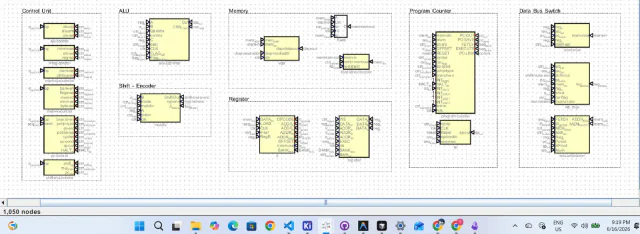
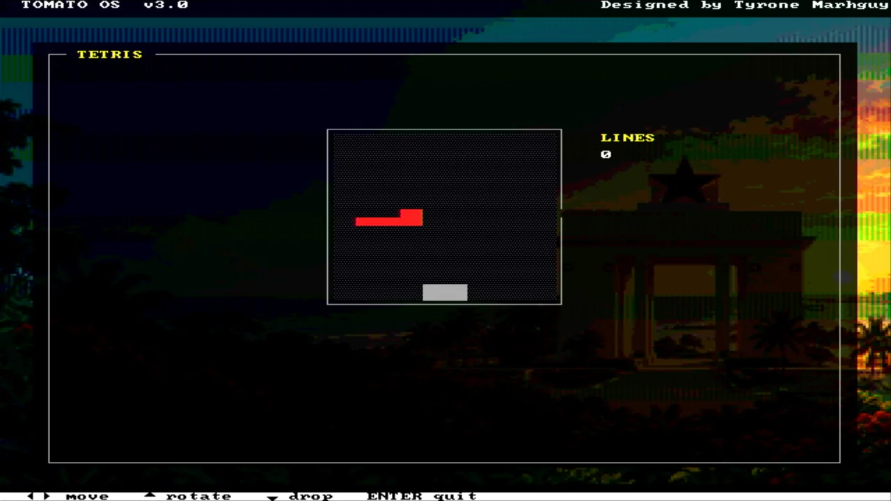

Dispatch · ISA
ISA as a Wire
Tomato is a parametric datapath, not an emulator. The instruction word is the configuration. About thirty-seven family maps so far — and the count moves as the copper does.
“We support sixty-six ISAs” sounds like an emulator checklist. That was the wrong headline. Tomato does not run foreign machines. An ISA is a first-class input: a mapping from someone else’s bits onto the muxes already sitting in copper.
The number was always a footnote. The mechanism is the story.
No interpreter. The opcode hits the muxes.
A conventional CPU that “supports a foreign ISA” translates it. Micro-ops in ROM. A software layer that pretends the datapath is someone else. Tomato does not do that. The 9-bit opcode indexes a control word that is the mux select — ALU planes, immediate shape, write-back source, byte lane, PC overlay. One cycle. The EEPROMs on the boards are that table sitting next to the copper they drive. Decode. Not an interpreter, and not a second ISA hiding in firmware.
A foreign binary does not get rewritten into Tomato micro-ops. It gets a map: these external bits overlay here, this literal encoding lands in the immediate box, this ALU op loads this LUT pair. Supporting a new ISA is a data-entry problem, not a microarchitecture redesign.
The overlay word
The 32-bit instruction is tight on purpose. Low bits are not wasted on a fourth register they cannot hold. They overlay, depending on the mnemonic, as COND, jump mode, or an immediate fragment. Same slices of copper. Different assembly spellings. That is how a branch condition, a jump flavor, and a short literal can share a field without a pre-decode shifter sitting in front of the IR.
The 32-bit wordLow bits overlay as COND, jump mode, or immediate
The immediate box
Sixteen encodings, decoded on the register board: imm8, imm12, imm13, imm16, LUI, and the rest of the family. RISC-V I-type, MIPS immediate, ARM rotated literals, x86 displacement widths — the common literal styles fit the box without a cycle of packing logic in front of execute. If an encoding lands in those widths, it is native. If it does not, it is not a map we claim.
The dual-LUT
The ALU resolves f(a,b,c) + g(a,b,c) + cin in a single cycle. Any operation from any ISA that lives in that three-input boolean family executes natively: the opcode loads the LUTs with the truth table. ADD, ANDN, the SHA Choose, a fused mask-and-add for a framebuffer — same adder, different programs. That is why “x86 mode” is the wrong picture. x86’s integer op, if it fits the family, is a LUT load. Not a mode bit.
An ISA is no longer a rigid contract. It is a parametric mapping from an external binary onto the physical copper.
About thirty-seven, casually
The spreadsheet has more rows than that. RISC-V extensions, ARM cores, SuperH revisions, PIC variants, Z80 and Z180 — each got a CSV because the opcode compiler’s sweep database lists them separately. Count the files and you get sixty-something. Count the families a person would name at a bench — RV32, MIPS, ARM, x86, 6502, Z80, SPARC, PowerPC, AVR, and kin — and you land around thirty-seven.
That integer is not a ceiling. It is how many maps are defined today. The hardware accepts the family. The limit is how many mappings we care to write, and how much of each encoding the datapath already absorbs. More burns, tighter overlay packing, another LUT program that eats a literal style Tomato currently traps — the casual count moves. Optimization on Tomato changes it for the better. The space is continuous; the CSV is just the current sweep.
| What it is not | What it is |
|---|---|
| Tomato runs 66 ISAs | The datapath is parameterized by the instruction word |
| It has an x86 mode | x86 immediates that fit the box land without a shift |
| Emulation through microcode | The opcode hits the muxes in one cycle |
| 66 is the limit | ~37 families mapped; the hardware accepts the family |
The honest edge
This applies to the compute, shift, and register-access layers. Tomato does not claim x86 segmentation, ARM TrustZone, or the rest of the system-level furniture that is not a mux on this datapath. For the work that is ALU, shifter, and load/store — the bulk of integer code — the execution is native. Mapped, not interpreted.
Authority for the maps: docs/isa/profiles.csv. Authority for the copper: the overlay word, the immediate box, the dual-LUT. The ISA page is the sheet. This page is why the number stopped being the headline.
From the build
The work behind the words.
{kind=link}

The modular control design documented in the build journal.
{kind=link}

Tetris in Tomato OS, written for the custom instruction set.